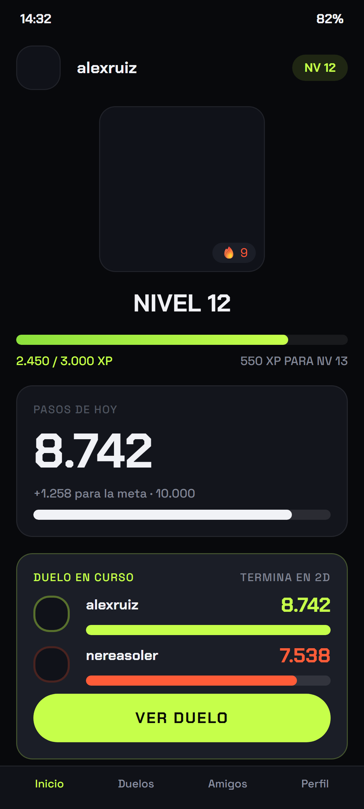

La racha se rompe sola
Cada día que cumples tu objetivo suma uno. Un día sin andar y vuelve a cero, sin perdón y sin segundas oportunidades.
Pateo convierte tus pasos reales en duelos 1v1 contra tus amigos. Gana el que más anda.

La app lee los pasos que tu teléfono ya cuenta. Sin pulsera, sin apuntar nada y sin tener que abrirla cada dos horas.
Eliges a un amigo y un plazo. Los dos empezáis de cero en el mismo instante, así que nadie llega con ventaja.
Cuando vence el plazo gana quien más pasos ha dado. El ganador se lleva el XP y la lámina para restregarla.
No hay que confirmar nada ni acordarse de entrar. Al vencer el plazo el servidor cuenta los pasos de los dos, reparte el XP y te avisa.
Cada día que cumples tu objetivo suma uno. Un día sin andar y vuelve a cero, sin perdón y sin segundas oportunidades.
Cada duelo ganado empuja la barra un poco más.
Los buscas por nombre, mandas la solicitud y en cuanto la aceptan ya os podéis retar.
Al terminar, la app te deja una imagen vertical con el resultado, lista para tu historia.
El marcador que cuenta es el del servidor, y el servidor corta por un tope diario antes de guardar nada.
Andar mucho no te sube de nivel por sí solo. Lo que sube de nivel es ganar el duelo, y el premio sale de los pasos con los que lo ganaste. El que pierde se queda como estaba.
XP = floor(pasos_del_ganador / 10)
Ganar con 8.742 pasos son 874 de XP. No hay multiplicadores escondidos ni bonus por pagar.
Un duelo nuevo al día.
Los pasos, los amigos, la racha, los niveles y las láminas para compartir entran aquí. Los duelos que te reten a ti no gastan tu cupo.
Descargar en Google PlayDuelos sin límite.
Quita el cupo diario. El precio te lo dice la tienda en tu moneda, y se contrata desde dentro de la app.
Se puede cancelar desde Google Play
Sí. Descargar y jugar no cuesta nada: pasos, amigos, rachas, niveles y láminas para compartir van incluidos. La cuenta gratuita puede crear un duelo nuevo al día, y la suscripción Pro quita ese límite.
No. Pateo usa los pasos que tu teléfono ya está contando. Si además tienes una pulsera o un reloj que escriba en Health Connect, esos pasos también cuentan.
En Android, de Health Connect, que es el almacén de salud del propio sistema. Tú le das permiso para leer los pasos y puedes retirárselo cuando quieras desde los ajustes del teléfono.
El recuento que vale es el del servidor, no el del teléfono. El servidor aplica un tope diario y descarta lo que llega por encima, así que pasarse una hora sacudiendo el móvil no mueve el marcador del duelo.
Todavía no. Esta primera versión sale solo en Android. La de iOS está en camino y no tiene fecha pública.
Sí, desde la propia app: Ajustes, Cuenta, Borrar cuenta. El borrado es definitivo y se lleva tu perfil, los pasos guardados y los duelos. Si ya has desinstalado la app, escribe a porz4.shipaton@gmail.com.